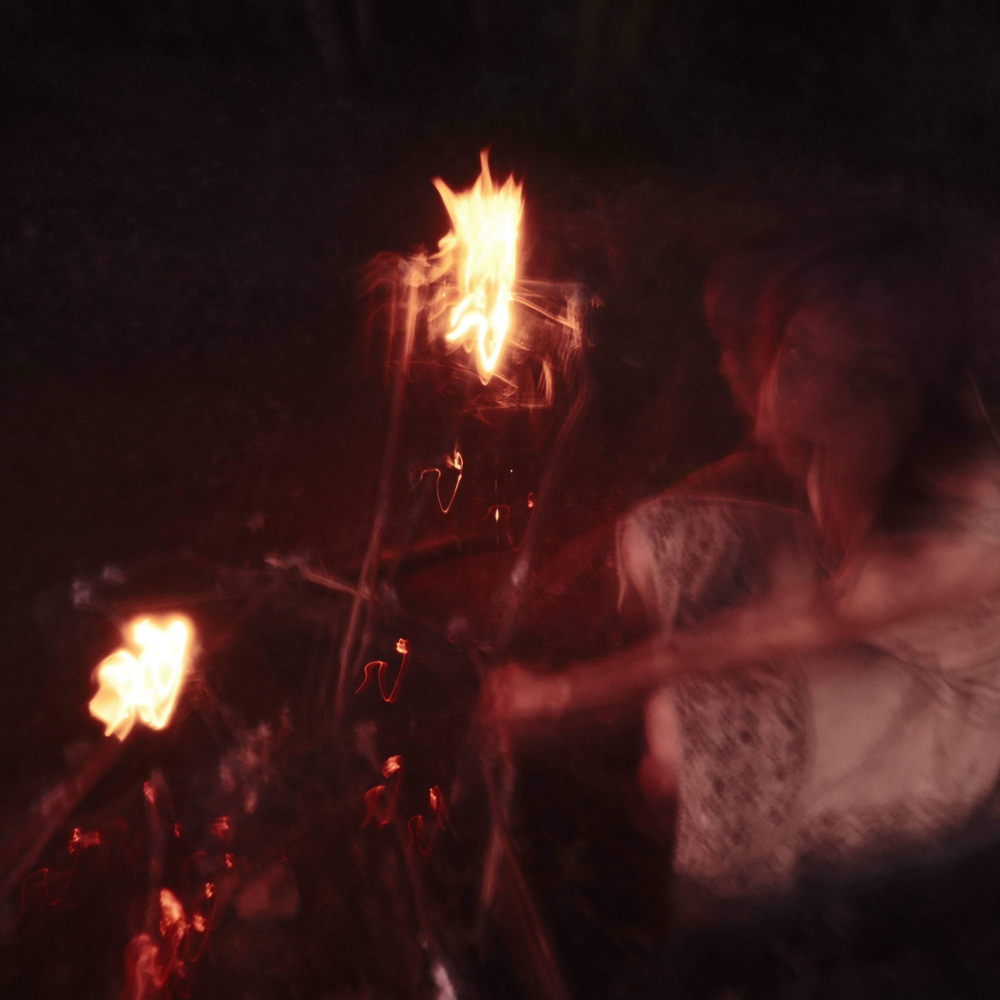

About the artist
Working with
the inner world.
An evolving practice in mixed media, performance, and installation.

I’m a mixed-media artist who focuses mainly on performance and installation. I want to give form to the deepest emotions we feel, the ones that are hard to explain, yet somehow familiar to us all.
I’m drawn to the moments when feelings take over: when an emotion pushes us to act irrationally, when control slips away, or when we feel caught in a response we cannot stop. Through my work, I try to give these experiences a physical form. I want people to recognize something of themselves in them and to feel that their struggles are real, shared, and worthy of being seen, not buried deep within.
Nature is a central source of inspiration. I’m drawn to the forest as a raw, untamed space where societal boundaries fall away and another kind of energy takes over. It can feel both threatening and strangely comforting: a liminal, fairytale-like place where the usual ways of presenting ourselves loosen, and something more instinctive and honest can surface.
I bring natural materials, performance, and installation together to create spaces where these tensions can be felt rather than neatly explained. The work often holds opposites at once: safety and danger, beauty and unease, restraint and loss of control; making room for the complicated feelings we may otherwise keep hidden.
See selected works